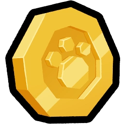

Properties
Rolling the Dice
is a core gameplay feature, and one of the main ways to obtain Pets
 .
.
Rolling
Players can roll the dice for free by clicking or tapping the dice icon at the bottom center of their screen.
This initiates a hatching animation of an egg followed by a rolling animation.
Once the pet is rolled, it is displayed and added to the player's inventory,
along with  Coins based on the pet's
 rarity.
rarity.
By Default, players can roll up to x1 Dice at a time.